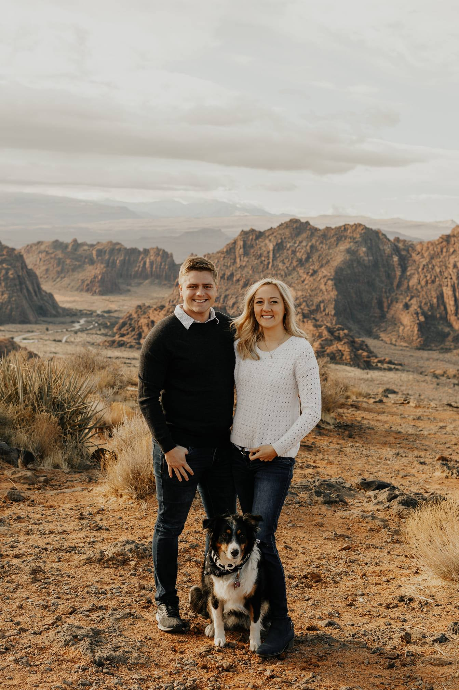

Daniel Brewer
About Me
I am a Statistitian studying Data Science and with a minor in Computer Science. My hobbies include training for triathlons and hiking. I love playing any sport and being outside. I am married to my lovely wife Celeste and we have our first baby due May 23rd!
PROJECTS
- Pose-Verification: Mutual
For my Statistics and Data Science Capstone my team and I created a Machine learning algorithm using Nueral Nets to help increase scammer detection when new accounts are created. In our algorithm we detect wether or not a new user is doing the pose asked in a live photo at the time of creation. We classified and cleaned the data, trained the models, and set up a working api for Mutual to and recieve their responses. We were able to cut the amount of time spent manually approving photos by74% with a 1.9% false negative rate. - On campus Internship: Knitwork
Full stack devolpment for a start up company built to help returning mothers to the work force by verifying through test that they are still qualified in the desired skills of the employer. I specifically helped create the database and matching algorithm between employers and job seekers to help companies see potential employees that met desired criteria in match percentage rankings. Intership won 2nd place $10,000 Lassonde Entrepreneur Internship award. - BYU Broadcasting Data Collection
Created natural language processing (NLP) models to automate open-ended survey data analysis. Automated data collection and cleaning from BYU Radio media access log files for podcast and digital, on-demand request from listeners.
EXPERIENCE
- Data Analyst · Brigham Young University, BYUB - 09/16/2020 – Present
- Data Science Capstone · Brigham Young University · Mutual - 08/28/2020 – 04/21/2021
- Data Specialist · Brigham Young University, BYUB – 04/25/2020 - 08/25/2020
- On Campus Internship · Brigham Young University · KnitWork – 01/06/2019 – 04/12/2019
